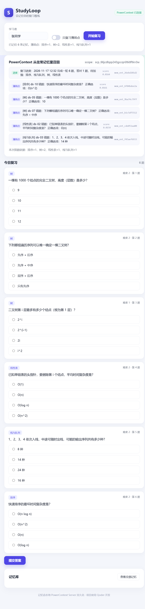
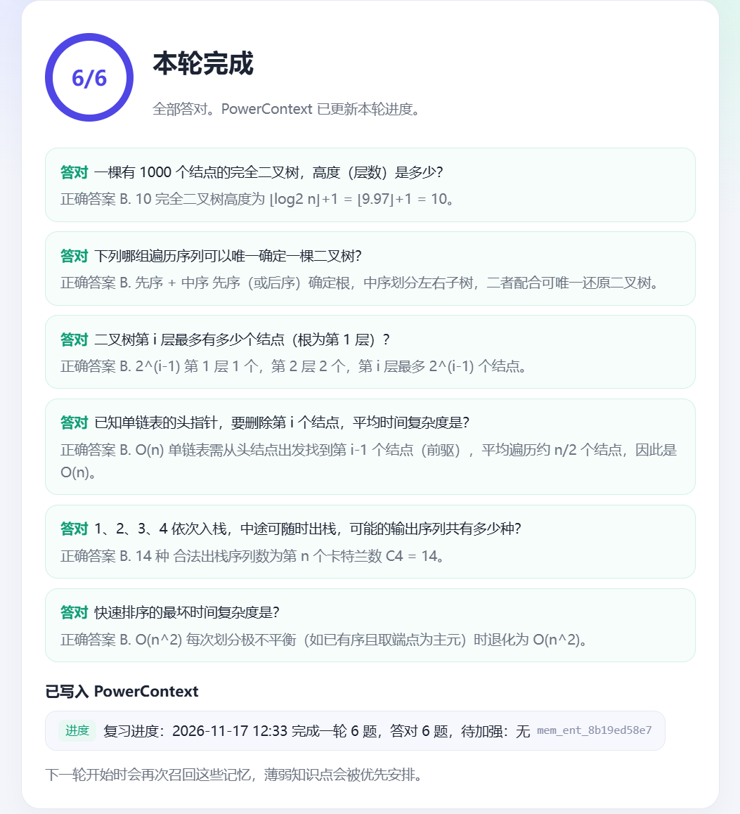

错题会重复
错过一次的知识点，隔一周再看还是陌生；错题本记录了题目，却没记录「为什么错」。
OceanBase 2026 数据库大赛 · Qoder 赛道
StudyLoop 把学习者的薄弱知识点、复习进度和偏好交给 PowerContext。 下一次打开时，它先想起你，再安排题目——不用每次从零解释自己。

问题
错过一次的知识点，隔一周再看还是陌生；错题本记录了题目，却没记录「为什么错」。
换设备、换工具、隔几天再打开，之前的复习范围与掌握情况全部丢失。
每次都要重新描述自己的薄弱章节和复习偏好，AI 的「个性化」只存在于单次会话。
核心功能
每次开始复习，应用按学习者读取 PowerContext 中的薄弱点、进度和偏好，并在界面上展示命中的 Entry ID 与检索方式。
答错后按主题写入 weakness 记忆，同一道题不会重复记录；每轮结束追加一条 progress，记录正确数与待加强主题。

记忆库列出当前学习者的全部条目。关闭 PowerContext 后记忆不可见——证明这些状态确实来自它，而不是应用本地缓存。

技术
读取 Scope 内记忆，统计薄弱主题，按「难度 + 2 × 薄弱次数」排序出题。
应用内完成评分与解析，题目与答案不写入记忆。
错题写入 weakness，整轮写入 progress；勾选「只复习薄弱点」时写入 preference。
新一轮召回这些条目，薄弱主题优先出现，偏好自动恢复。
| 能力 | 实现 | PowerContext API |
|---|---|---|
| 学习者隔离 | 每个学习者一个 Scope | GET/POST /v1/scopes |
| 记忆写入 | weakness / progress / preference | POST /v1/memory/remember |
| 记忆召回 | 按查询检索并展示命中方式 | POST /v1/memory/search |
| 记忆库 | 列出全部条目与 Entry ID | POST /v1/memory/entries/list |
未配置模型的本地 PowerContext 使用全文检索完成召回（响应 mode: "fts"）；接入生成模型与向量检索后，应用代码无需修改。
运行
uv tool install --force "powercontext[cli,server]==1.2.0"
powercontext server runcd qoder
uv venv .venv
uv pip install -r requirements.txt --python .venv/Scripts/python.exe
.venv/Scripts/python.exe app.py打开 http://127.0.0.1:7860。macOS / Linux 将 .venv/Scripts/python.exe 换成 .venv/bin/python。
运行 scripts/verify_demo.py，脚本用两轮复习检查记忆是否跨会话复用。全部通过时输出：
验证通过：PowerContext 中的记忆确实被后续会话复用。Qoder 开发记录
读取赛题与 PowerContext OpenAPI，确认 Scope、Memory 写入、FTS 召回接口，先做 curl 冒烟测试再编码。
生成客户端、排题逻辑、FastAPI 路由与前端；联调中定位并修复 Windows 下 NO_PROXY 导致的 httpx 初始化失败。
浏览器实测两轮复习与记忆库，运行端到端验证脚本，整理开发记录并用 Qoder Sites 发布本页。